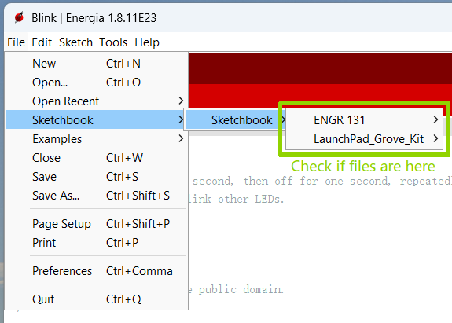

Download the zipped file using the link above.
Figure 3.2.1: Downdoaded file.
Extract everything to the folder you created in Step 1. Please note that everything MUST be remained in the same folder after extraction.
Figure 3.2.2: Right click the zipped folder to extract.
Figure 3.2.3: Extract the zipped file to the designated location.
After extraction, feel free to delete the original zipped folder.
Please check if there is a driver folder in your unzipped folder.
Figure 3.2.4: Check if there is a driver folder.
Unzip the ENGR 131 sketchbook file and copy the unzipped folder into the “Energia” folder in your Documents.
Figure 4.2: Move sketchbook into Energia.
Close and restart Energia.
Navigate to File → Sketchbook, and you should see the
ENGR 131 and LaunchPad_Grove_Kit folders with sketches available to use for class.

Figure 4.3: Check files in sketchbook.
Step 5: Setup Energia to communicate with the TI kits.
Connect the MSP430 board to your laptop using a cable.
In Energia, open Tools and set the following:
Board → MSP-EXP430FR5994LP
Figure 5.1: Selecting the correct board.
Port → Select the port that corresponds to your laptop’s USB/Type-C connection.
If you are unsure which port it is, try each option until the board is detected.
Figure 5.2: Selecting port.
TI Kit Troubleshooting
Here are common problems and their solutions.
Communication error between Energia IDE and your TI kit
Ensure your TI kit is plugged in correctly using the provided Micro B (to either USB or Type C) cable.
There should be a green power LED lit up when this occurs.
The COM port seleted in Energia is not the correct port. While it is generally the highest port number
available, this is not always true. All COM ports should be tested if there are Communication issues.
Ensure all drivers have been installed. Please refer to Step 3 in Getting Started.
Restart Energia IDE.
Restart your computer. This should not be required, but can help depending on your computer's settings.
Error uploading sketches to your TI kit
Ensure your TI kit is plugged in correctly using the provided Micro B (to either USB or Type C) cable.
There should be a green power LED lit up when this occurs.
Ensure the board is updated with the latest package: Tools → Board → Board Manager.
Under MSP430 dropdown menu, select the latest version.
Figure 6: Equip your board with its latest package.
TI Kit Activities
Click on an activity to expand and view details:
In-Class Activity 2B/3A: Blink an LED
Objective: In this activity, you will practice controlling the built-in LEDs on the MSP430FR5994 by programming them to turn on,
blink at different speeds, alternate, and follow simple patterns. You will also measure the timing of the blinks with a stopwatch to see how human
error affects consistency, then analyze your results using basic statistics. By the end, you’ll gain hands-on experience with both programming a
microcontroller and evaluating real data to support design decisions.
Tasks:
Turn on one of the LaunchPad LEDs (green or red).
Change the blinking speed of that LED.
Turn on the second built-in LED.
Create an alternating blinking interval to 2 seconds using delay(2000).
Measure the ON and OFF times manually with a stopwatch for at least 8 cycles (this will incorporate human error).
Record your data in Excel, calculate descriptive statistics (mean, standard deviation, minimum, maximum), and create a graph of the results.